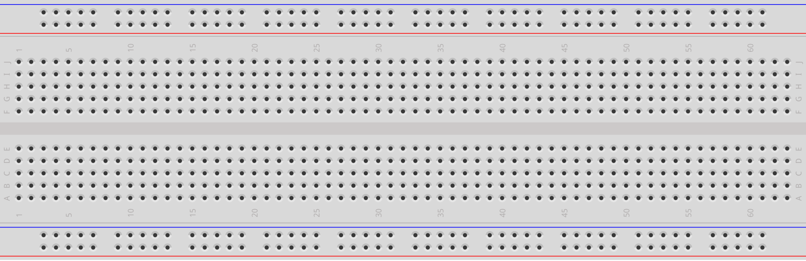
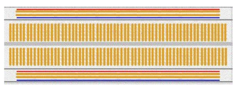
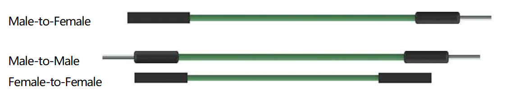
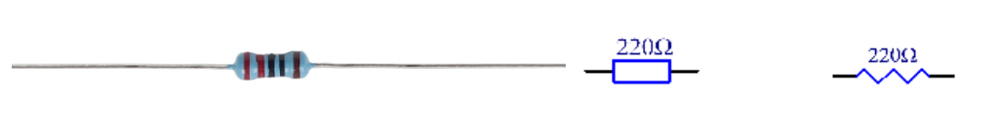
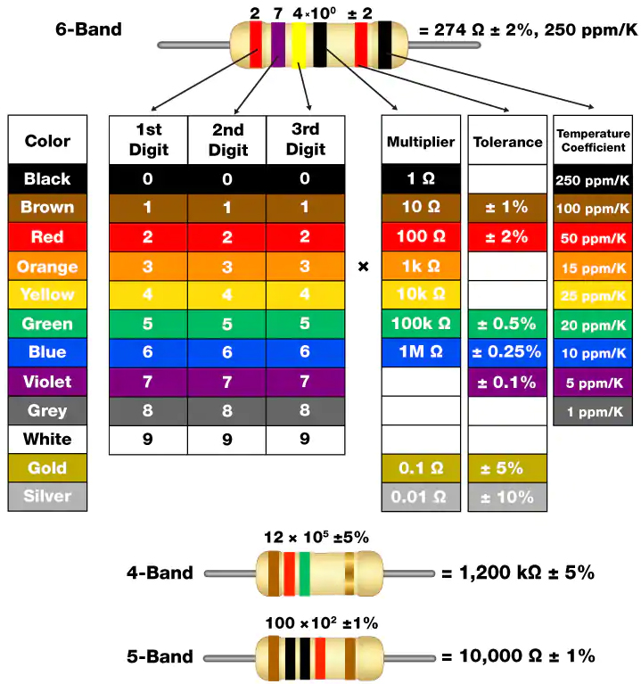
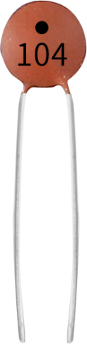
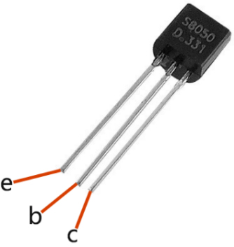
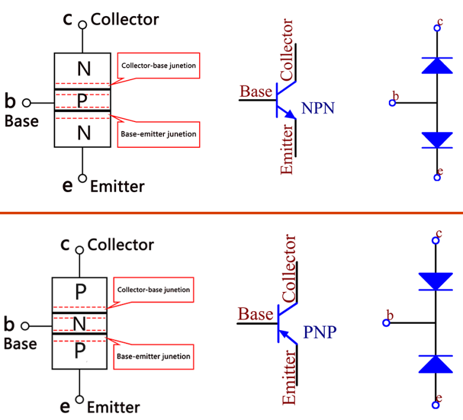
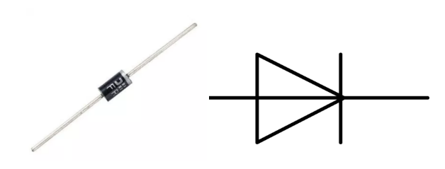
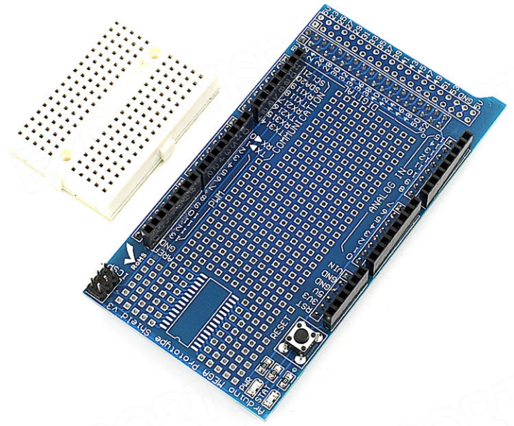

2.1 Gemeinsame Komponente¶
Überblick¶
In dieser Lektion werden einige gängige Komponenten vorgestellt, darunter Steckbrett, Sprungdrähte, Widerstand, Kondensator, Transistor, Diode, Prototype Shield usw.
Steckbrett¶
Ein Steckbrett ist eine Konstruktionsbasis für das Prototyping von Elektronik. Es kann verwendet werden, um Schaltungen schnell aufzubauen und zu testen, bevor ein Schaltungsdesign abgeschlossen wird. Und es hat viele Löcher zum Einsetzen von Komponenten wie den oben genannten ICs, Widerständen und Jumpern. Mit dem Steckbrett können Sie problemlos Komponenten einsetzen und entfernen. Wenn es also viele Änderungen geben wird oder wenn Sie nur schnell eine Schaltung erstellen möchten, ist dies viel schneller als das Löten Ihrer Schaltung. Daher wird es in vielen Experimenten häufig als Hub verwendet, um zwei oder mehr Geräte zu verbinden.
Dies ist die interne Struktur eines Full + Breadboards. Obwohl das Steckbrett Löcher aufweist, sind einige von ihnen intern mit Metallstreifen verbunden. Diese Löcher dienen zum Einführen von Stiften von Geräten oder Drähten. An den langen Seiten befinden sich vier lange Metallstreifen. Die blauen und roten Linien sind nur zur klaren Beobachtung markiert. Sie können jedoch die blaue Linie als GND und die rote als VCC verwenden. Alle fünf Löcher in der Mitte sind vertikal mit den Metallauslösungen im Inneren verbunden, und die Metallauslösungen sind nicht miteinander verbunden. Sie können sie horizontal mit Drähten oder Komponenten verbinden. In der Mitte des Steckbretts befindet sich eine Nut für IC-Chips.
Überbrückungsdrähte¶
Drähte, die zwei Klemmen verbinden, werden als Überbrückungsdrähte bezeichnet. Es gibt verschiedene Arten von Überbrückungsdrähten. Hier konzentrieren wir uns auf diejenigen, die in Steckbrettern verwendet werden. Sie werden unter anderem verwendet, um elektrische Signale von irgendwo auf dem Steckbrett an die Eingangs- / Ausgangspins des Mikrocontrollers zu übertragen.
Durch Einsetzen des „Endverbinders“ des Jumpers in den im Steckbrett vorgesehenen Steckplatz kann der Jumper installiert werden. Unter der Oberfläche befinden sich mehrere Gruppen paralleler Platinen, die die Steckplätze je nach Bereich in Reihen oder Spalten verbinden. Der „Endverbinder“ kann in den spezifischen Steckplatz eingesetzt werden, der im spezifischen Prototyp des Steckbretts ohne Löten angeschlossen werden muss.
Es gibt drei Arten von Überbrückungskabeln: Buchse zu Buchse, Stecker zu Stecker und Stecker zu Buchse. Der Grund, warum wir es von Mann zu Frau nennen, ist, dass es die herausragende Spitze an einem Ende sowie ein versenktes weibliches Ende hat. Mann-zu-Mann bedeutet, dass beide Seiten männlich sind, und Frau-zu-Frau bedeutet, dass beide Enden weiblich sind.
In einem Projekt können mehrere Typen verwendet werden. Die Farbe der Sprungdrähte ist unterschiedlich, dies bedeutet jedoch nicht, dass ihre Funktion entsprechend unterschiedlich ist. Es wurde nur entwickelt, um die Verbindung zwischen den einzelnen Schaltkreisen besser zu identifizieren.
Widerstand¶
Der Widerstand ist ein elektronisches Element, das den Zweigstrom begrenzen kann. Der feste Widerstand bezieht sich auf den Widerstand, der nicht geändert werden kann, wenn das Potentiometer oder der variable Widerstand eingestellt werden kann.
Die Widerstände in diesem Kit sind fest. In der Schaltung ist es wichtig, die angeschlossenen Komponenten zu schützen. Die folgenden Bilder zeigen einen echten 220Ω-Widerstand und zwei allgemein verwendete Schaltungssymbole für den Widerstand. Ω ist die Widerstandseinheit und die größere enthält KΩ, MΩ usw. Ihre Beziehung kann wie folgt gezeigt werden: 1 MΩ = 1000 KΩ, 1 KΩ = 1000 Ω, was 1 MΩ = 1000.000 Ω = 10 ^ 6 Ω bedeutet. Normalerweise ist der Widerstand darauf markiert. Wenn Sie diese Symbole in einer Schaltung sehen, steht sie für einen Widerstand.
 Der Widerstand kann direkt, im Farbcode und nach Zeichen markiert werden. Die in diesem Kit angebotenen Widerstände sind durch verschiedene Farben gekennzeichnet. Die Bänder am Widerstand geben nämlich den Widerstand an.
Wenn wir einen Widerstand verwenden, müssen wir zuerst seinen Widerstand kennen. Es gibt zwei Methoden: Sie können das Frequenzband am Widerstand beobachten oder den Widerstand mit einem Multimeter messen. Es wird empfohlen, die erste Methode zu verwenden, da diese bequemer und schneller ist. Wenn Sie sich über den Wert nicht sicher sind, verwenden Sie das Multimeter.
Wie auf der Karte gezeigt, steht jede Farbe für eine Zahl.
Kondensator¶
Ein Kondensator ist eine Komponente, die Energie in Form von elektrischer Ladung speichert oder eine Potentialdifferenz (statische Spannung) zwischen ihren Platten erzeugt, genau wie eine kleine wiederaufladbare Batterie.
Standardkapazitätseinheiten
Mikrofarad (μF) 1μF = 1/1,000,000 = 0.000001 = \(10^{- 6}\) F
Nanofarad (nF) 1nF = 1/1,000,000,000 = 0.000000001 = \(10^{- 9}\)F
Picofarad (pF) 1pF = 1/1,000,000,000,000 = 0.000000000001 = \(10^{- 12}\)F
Hier haben wir 104 Kondensatoren (10 x 104PF) gezeigt. Genau wie beim Ring der Widerstände helfen die Zahlen auf den Kondensatoren beim Ablesen der Werte, sobald sie auf der Platine montiert sind. Die ersten beiden Ziffern stellen den Wert dar und die letzte Ziffer der Zahl bedeutet den Multiplikator. Somit repräsentiert 104 eine Potenz von 10 × 10 bis 4 (in pF) gleich 100 nF.
Transistor¶
Der Transistor ist ein Halbleiterbauelement, das Strom für Strom steuert. Es verstärkt schwaches Signal auf Signal mit größerer Amplitude und wird auch für berührungslose Schalter verwendet. Ein Transistor ist eine dreischichtige Struktur, die aus Halbleitern vom P-Typ und N-Typ besteht. Sie bilden die drei Regionen intern. Der dünnere Teil in der Mitte ist die Grundfläche, die anderen beiden sind entweder vom N-Typ oder vom P-Typ - der kleinere Bereich mit der Mehrheit der Träger ist der Emitterbereich und der andere ist der Kollektorbereich. Diese Zusammensetzung ermöglicht es dem Transistor, ein Verstärker zu sein.
Aus diesen drei Regionen werden jeweils drei Pole erzeugt, nämlich Basis (b), Emitter (e) und Kollektor (c). Sie bilden zwei PN-Übergänge, nämlich den Emitterübergang und den Sammelübergang. Die Pfeilrichtung im Transistorschaltungssymbol gibt die Richtung des Emitterübergangs an. Basierend auf dem Halbleitertyp können Transistoren in zwei Gruppen unterteilt werden, die NPN- und die PNP-Gruppe. Aus der Abkürzung ist ersichtlich, dass der erstere aus zwei Halbleitern vom N-Typ und einem P-Typ besteht, während der letztere das Gegenteil ist Siehe die Abbildung unten.
Wenn ein Signal mit hohem Pegel einen NPN-Transistor durchläuft, wird es erregt. Ein PNP benötigt jedoch ein Low-Level-Signal, um es zu verwalten.
Diode¶
Eine Diode ist eine zweipolige Komponente in der Elektronik mit einem unidirektionalen Stromfluss. Es bietet einen geringen Widerstand in Richtung des Stromflusses und einen hohen Widerstand in der entgegengesetzten Richtung. Dioden werden meistens verwendet, um Schäden an Bauteilen zu vermeiden, insbesondere aufgrund elektromotorischer Kraft in Schaltkreisen, die normalerweise polarisiert sind.
Die beiden Anschlüsse einer Diode sind polarisiert, wobei das positive Ende als Anode und das negative Ende als Kathode bezeichnet wird. Die Kathode besteht üblicherweise aus Silber oder hat ein Farbband. Die Steuerung der Stromflussrichtung ist eines der Hauptmerkmale von Dioden - der Strom in einer Diode fließt von Anode zu Kathode. Das Verhalten einer Diode ähnelt dem Verhalten eines Rückschlagventils. Eine der wichtigsten Eigenschaften einer Diode ist die nichtlineare Stromspannung. Wenn eine höhere Spannung an die Anode angeschlossen ist, fließt Strom von Anode zu Kathode, und der Prozess wird als Vorwärtsvorspannung bezeichnet. Wenn jedoch die höhere Spannung an die Kathode angeschlossen ist, leitet die Diode keine Elektrizität, und der Prozess wird als Sperrvorspannung bezeichnet.
Prototyp Schild¶
Mit dem Prototype Shield können Sie ganz einfach benutzerdefinierte Schaltkreise entwerfen. Sie können Teile im Prototyping-Bereich löten, um Ihr Projekt zu erstellen, oder es mit einem kleinen Steckbrett verwenden, um Schaltungsideen ohne Löten schnell zu testen. Es bietet zusätzliche Anschlüsse für alle Arduino-E / A-Pins und bietet Platz für die Montage durch Löcher und oberflächenmontierte integrierte Schaltkreise. Dies ist eine bequeme Möglichkeit, Ihre benutzerdefinierte Schaltung und Arduino zu einem einzigen Modul zu machen.
Spezifikationen
Es kann direkt auf das Sunfounder Mega2560-Board gelegt werden. Ein kleines Steckbrett wird mitgeliefert, das Sie für einige einfache Experimente verwenden können.
Stellen Sie einen Footprint für SOP28 bereit.
Es verfügt über zusätzliche Verbindungen für alle Arduino-E / A-Pins
Wir bieten Ihnen ein Pin22-Pin53-Bondpad an, mit dem Sie das Bauteil direkt schweißen können.